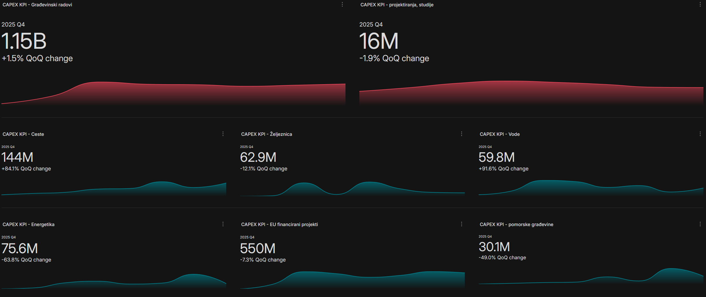

CAPEX analiza javne nabave u Hrvatskoj za 2025. godinu
Kapitalna izdvajanja (CAPEX) u javnoj nabavi ključni su pokazatelj razvojnog smjera hrvatske infrastrukture. U ovom članku analiziramo podatke za 2025. godinu po svim ključnim sektorima i identificiramo trendove koji oblikuju tržište.
Pregled po sektorima
Javna nabava u segmentu kapitalnih investicija u 2025. godini bilježi značajne pomake u nekoliko ključnih sektora. Infrastrukturni projekti financirani iz EU fondova nastavili su dominirati, dok su neki tradicionalni sektori pokazali znakove usporavanja.
Cestovna infrastruktura
Sektor cestogradnje zadržao je vodeću poziciju po ukupnoj vrijednosti natječaja. Glavni pokretači rasta uključuju nastavak radova na autocestama i brzi cestama, kao i modernizaciju lokalnih prometnica.
Željeznička infrastruktura
Željeznica bilježi najbrži rast među svim sektorima, primarno zahvaljujući EU financiranju modernizacije koridora i nabavi novog voznog parka.
Vodna gospodarstva
Sektor vodnih građevina stabilan je s fokusom na izgradnju i modernizaciju vodoopskrbnih sustava te sustava odvodnje i pročišćavanja otpadnih voda.
Pomorske građevine
Ulaganja u pomorsku infrastrukturu pokazuju umjeren rast, s fokusom na modernizaciju luka i zaštitu obale.
Ključni trendovi
- EU fondovi kao pokretač: Preko 60% kapitalnih investicija u javnoj nabavi financirano je iz europskih strukturnih i investicijskih fondova
- Zelena tranzicija: Rastući udio projekata vezanih uz energetsku učinkovitost i obnovljive izvore energije
- Digitalizacija: Povećani zahtjevi za digitalnom dokumentacijom i e-nabavom
- Konsolidacija tržišta: Trend udruživanja manjih izvođača u konzorcije za velike infrastrukturne projekte
"Tvrtke koje koriste podatkovnu analitiku za praćenje CAPEX trendova u javnoj nabavi imaju 40% veću stopu uspješnosti na natječajima." — TenderAtlas analiza, 2025.
Što ovo znači za vašu tvrtku?
Razumijevanje kapitalnih izdvajanja po sektorima omogućuje tvrtkama strateško pozicioniranje i pravovremenu pripremu ponuda. Sektori s rastućim CAPEX-om predstavljaju priliku za ulazak na nova tržišta, dok stagnantni sektori zahtijevaju optimizaciju postojećih procesa.
TenderAtlas platforma pruža detaljne CAPEX analitike u realnom vremenu, omogućujući vam da pratite trendove, identificirate prilike i donosite informirane poslovne odluke.
Želite detaljne CAPEX analitike za vaš sektor?
Isprobajte TenderAtlas platformu i dobijte pristup naprednim analitikama javne nabave.
Isprobaj besplatno